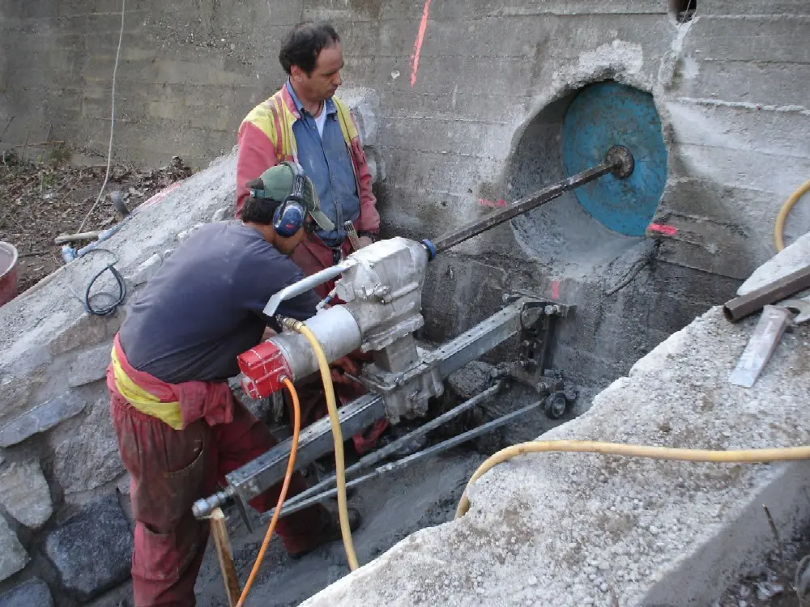

打撃を減らしたい現場では、コア削孔や切断で部材を分離する方法が候補になります。ただし、施工そのものが無音になるわけではなく、切断片の重量、機材設置、給排水や工期も含めた比較が必要です。
なぜ、ブレーカーが使いにくい現場があるのか
住宅街、学校・病院の隣接地、営業中の施設などでは、打撃に伴う振動・騒音が問題になることがあります。一方でブレーカーは条件によって施工スピードや費用で有利です。現場の規制や近隣条件を確認してから、代替工法の必要性を判断しましょう。
4つの工法を比較する
| 工法 | 特徴 | 主な注意点 |
|---|---|---|
| ブレーカー | 打撃により破砕。広範囲の撤去に候補 | 騒音・振動・飛散物、養生 |
| 連続コア | 穴を隣接させて切り離す。打撃の抑制を期待 | 作業時間、孔の重なり、残材、湿式排水 |
| ウォールソー | 直線切断で分割撤去しやすい条件がある | 切断深さ、機材固定、スラリー |
| ワイヤーソー | 大型・厚い部材の切断にも選択肢 | 機材スペース、搬出計画、施工費 |
「低振動」は「無振動」ではありません。近隣対策としては音源の違い、稼働時間、作業日数、養生と告知方法も比較します。
見積前に確認したい5項目
擁壁を切断すると、地盤や周辺構造物の安定に影響する場合があります。設計者・管理者による構造検討、仮設計画、必要な許認可と安全対策を先に確定してください。この記事は独自施工を勧める手順書ではありません。
どんな現場に向くのか
部分撤去の輪郭を比較的正確に区切りたい現場、打撃を抑える必要がある現場、既存構造物への影響を慎重に管理したい現場は、切断・削孔を検討する価値があります。反対に、大量撤去で時間制約が厳しい場合は別工法が有利なこともあります。
連続コア削孔とは？ 直線切断との違い
ダイヤモンドビットで円形の孔をあけ、隣の孔と重なるように繰り返して、必要な範囲に切離し線を形成する方法です。打撃破砕を主工程としないことがポイントですが、ドリル回転音や固定・搬出の音は発生します。孔を連ねるため、切断面には円弧状の凹凸が残りやすく、仕上げ精度を求める開口では追加処理の検討が必要です。
コア削孔そのものと、残った鉄筋の処理・部材の支持・取り出しは別工程です。削孔しただけで部材が安全に外れるわけではありません。壁厚・鉄筋量・作業面側のスペース・孔径と設備能力によって採否が変わるため、元請・設計者・専門工事会社の共同検討が欠かせません。
「削孔」と「撤去」を分けて工程表にする
- 事前調査：現況図面、擁壁が支える土、排水・水抜き孔、隣地境界、鉄筋・埋設物、構造上の変更可否を確認。
- 仮設と支持：撤去片が不意に転倒・落下しないよう、設計された支持・分割・揚重計画を決める。
- 削孔：設計承認済みの開口輪郭に対し、機器固定・電源・水処理・安全区画を確保して施工する。
- 分離・搬出：鉄筋、残留部、切断面の扱いと、支持しながらの搬出を別工種として計上する。
- 復旧・検査：残存擁壁の構造条件、止水・排水機能、端部補修、必要な記録と検査を確認する。
これは発注者・現場監督が工程の抜け漏れを防ぐための確認順であり、自己施工用の手順ではありません。
「小さな撤去だから手で持てる」と考えない
例えば厚さ20cm、縦横50cmのコンクリート片は体積0.05m³。密度を仮に2.4t/m³とすると約120kgです（鉄筋・付着物等は別）。小片でも人力搬出を前提にできません。実重量は現況・材質で変わるため、事前に分割寸法と支持・揚重方法を検討しましょう。
見積書で比較したい内訳
| 項目 | 比較するときの確認 |
|---|---|
| 削孔本体 | 孔径、深さ、孔数、配筋条件、作業方向 |
| 仮設・養生 | 機材固定、足場、止水・集水、養生範囲 |
| 分離・搬出 | 切断片の重量、揚重設備、積込・処分区分 |
| 周辺対応 | 作業時間の制約、計測、近隣説明、騒音対策 |
| 復旧 | 端部仕上げ、防水・排水、構造検査 |
注意：「コア削孔一式」の金額が低くても、部材の分離・揚重・処分が別途なら総額比較にはなりません。ウォールソーやワイヤーソーも同じ基準で見積条件を揃えると判断しやすくなります。
よくある質問
Q. 住宅街なら必ず連続コアが有利ですか？
いいえ。打撃音を抑える意義はありますが、孔数が多い場合や搬出が困難な場合は、工期・費用・連続運転音の面で不利になることもあります。
Q. 完成後の切断面はまっすぐですか？
孔を重ねるため、一般に円弧状の痕が残ります。意匠面・建具の納まりに直線精度が必要なら、他工法や仕上げとの組合せを検討します。
Q. 擁壁の一部だけなら設計確認は不要ですか？
不要とはいえません。土圧・排水・補強・隣地への影響を受ける構造物なので、改変の可否は設計者・管理者の判断を先行させます。
業者へ相談するときの情報メモ
次の情報があると、複数工法の比較を依頼しやすくなります。
- 現場所在地、搬入経路、駐車や作業スペース
- 擁壁の構造・厚さ・撤去範囲が分かる図面や写真
- 裏込め土、地下水、既設構造物、埋設設備の情報
- 近隣の制約（作業時間・振動・粉じん・排水）
- 切断後の部材を誰が、どの機材で搬出するか
擁壁の状態を確認する公的資料
擁壁は土圧・排水・地盤条件を受ける構造物です。外観だけで部分撤去の可否を決めず、所有者・管理者と設計者に現況と計画を確認してください。
普段の目視点検では、水抜き穴と背面の排水にも目を向けます。擁壁の水抜き穴と、雨の前後に確かめたい変化を参照してください。
公的な点検資料は危険の目安や相談先を知るためのものです。撤去範囲、仮設支持、切断・揚重、残存部の安全性は、個別の設計・現場条件に応じて専門家が判断します。
専門施工を相談する前に
神奈川・東京周辺で削孔・切断の施工会社を探す際は、工法の適否だけでなく、機材の対応範囲・配筋探査の要否・搬出計画を確認しましょう。施工会社の情報例として神奈川の専門工事会社の案内も参照できます。構造設計や撤去計画の最終判断は設計者・施工責任者が行ってください。
関連性の開示：この会社案内は本メディアの企画に知見を提供する事業者に関連するリンクです。